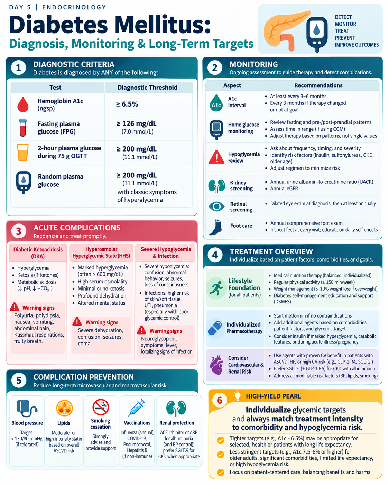
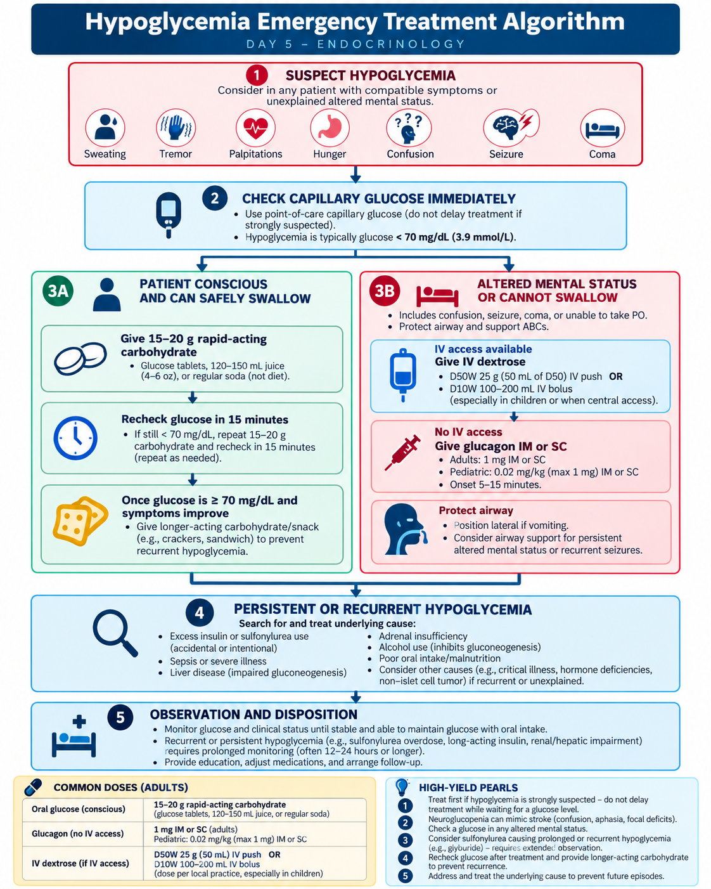
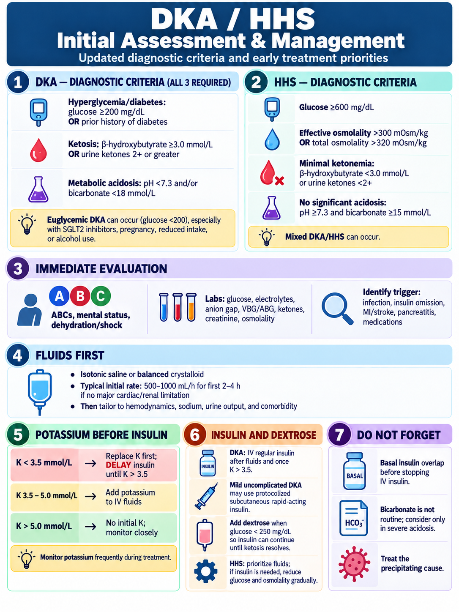
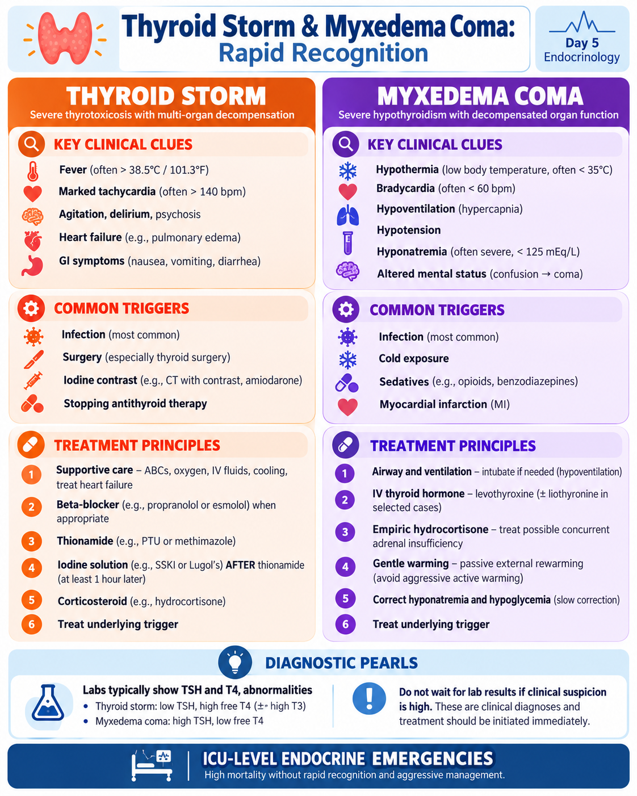
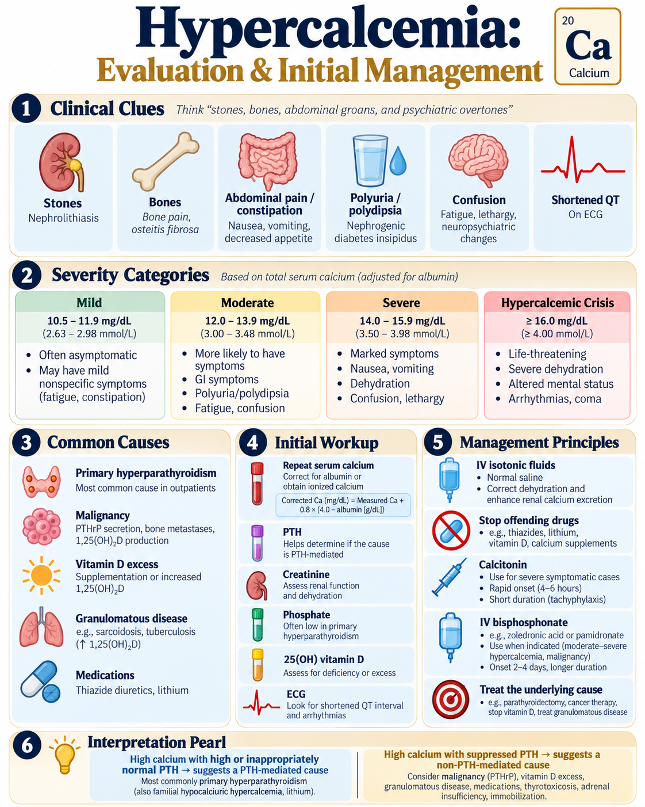

🦋 Diabetes & Endocrine Emergencies
Deep guideline-based diabetes care and high-yield endocrine emergencies with approved visuals and physician-level clinical vignettes.
80 questions
1. Diabetes Diagnosis & Long-Term Monitoring
Know the diagnostic thresholds, confirm appropriately, and screen systematically for complications.
Diagnostic criteria — nonpregnant adults
| Test | Diabetes threshold |
|---|---|
| A1C | ≥6.5% |
| Fasting plasma glucose | ≥126 mg/dL (7.0 mmol/L) |
| 2-h glucose after 75-g OGTT | ≥200 mg/dL (11.1 mmol/L) |
| Random plasma glucose | ≥200 mg/dL with classic symptoms or hyperglycemic crisis |
Without unequivocal hyperglycemia, confirm with a second abnormal result from the same or a different test.
Prediabetes
- A1C 5.7–6.4%
- Fasting glucose 100–125 mg/dL
- 2-h OGTT glucose 140–199 mg/dL
A1C interpretation traps
A1C may be misleading with altered red-cell turnover, hemoglobin variants, recent transfusion, pregnancy, advanced kidney disease, or certain anemias. When A1C and glucose are discordant, investigate the reason rather than automatically trusting one value.
Monitoring & complication prevention
- A1C usually every 3–6 months depending on control and therapy changes.
- Annual urine albumin-to-creatinine ratio and eGFR in appropriate patients.
- Retinal screening, foot assessment, blood pressure and lipid management.
- Vaccination, smoking cessation, nutrition, physical activity and weight management.
Microvascular vs macrovascular disease
- Microvascular: retinopathy, nephropathy, neuropathy.
- Macrovascular: coronary disease, stroke, peripheral arterial disease.
Classic presentation that changes urgency
Polyuria, polydipsia, weight loss, dehydration, ketotic symptoms, marked hyperglycemia or catabolic features may require immediate treatment rather than routine outpatient confirmation.
Common wrong-answer trap
One borderline abnormal screening test in an asymptomatic patient does not automatically establish diabetes. Confirmation is generally required unless hyperglycemia is unequivocal.
📊 Diabetes Mellitus: Diagnosis, Monitoring & Long-Term Targets
Approved Day 5 infographic
2. Type 2 Diabetes Medication Strategy
Choose therapy by comorbidity, hypoglycemia risk, weight goals and degree of hyperglycemia.
Core principle
Treatment is individualized. Do not think “metformin first for everyone” without considering ASCVD, heart failure, CKD, obesity, hypoglycemia risk, cost, side effects and patient preferences.
When cardiorenal disease drives the choice
- ASCVD/high cardiovascular risk: prioritize a GLP-1 receptor agonist and/or SGLT2 inhibitor with proven benefit.
- Heart failure: prioritize an SGLT2 inhibitor when appropriate.
- CKD: SGLT2 inhibitor and/or GLP-1 RA depending on eGFR, albuminuria and comorbidity.
Weight-centered therapy
GLP-1–based therapies, including dual GIP/GLP-1 agents, can provide major glucose and weight benefit. If weight goals are not met, ADA 2026 recommends intensifying lifestyle, pharmacologic or metabolic-surgery strategies as appropriate.
Hypoglycemia risk
Insulin and sulfonylureas have higher hypoglycemia risk. When adding newer agents, reassess whether those medications need dose reduction.
When insulin becomes important
Consider insulin regardless of background therapy when there is symptomatic hyperglycemia, catabolism, or very high glucose—e.g. A1C >10% or glucose ≥300 mg/dL.
When insulin is not mandatory
In type 2 diabetes without severe hyperglycemia or crisis, ADA 2026 generally prefers GLP-1–based therapy before insulin for initial or add-on injectable treatment.
Medication traps
- Do not combine a DPP-4 inhibitor with a GLP-1 RA/dual GIP-GLP-1 agent—little added benefit.
- Metformin: consider renal function, GI effects and B12 deficiency risk.
- SGLT2 inhibitors: genital infections, volume depletion and euglycemic DKA risk.
- TZDs: edema/weight gain; avoid or use caution in symptomatic HF.
Memory line
Choose the diabetes drug for the patient—not only for the A1C.
📊 Diabetes Mellitus Clinical Management Guide
Shared Day 5 infographic3. Insulin Basics & Hypoglycemia
Recognize insulin patterns and treat low glucose before neurologic injury occurs.
Insulin categories
- Rapid acting: lispro, aspart, glulisine — mealtime/correction.
- Short acting: regular insulin — slower onset; also used IV in DKA/HHS.
- Intermediate: NPH.
- Long/ultralong: glargine, detemir, degludec — basal coverage.
Basal-bolus concept
Basal insulin covers fasting hepatic glucose production. Prandial insulin covers meals. Correction insulin treats unexpected hyperglycemia. “Sliding scale alone” is generally a poor long-term strategy.
Hypoglycemia recognition
- Autonomic: sweating, tremor, hunger, palpitations.
- Neuroglycopenic: confusion, behavior change, focal deficit, seizure, coma.
- Glucose <70 mg/dL is the alert threshold.
Conscious and able to swallow
Give 15 g fast-acting carbohydrate, recheck in 15 minutes, and repeat if glucose remains ≤70 mg/dL. Once recovered, provide longer-acting carbohydrate if the next meal is not imminent.
Severe hypoglycemia
If altered, seizing, unconscious or unable to swallow: give IV dextrose when access is available or glucagon if it is not. Protect the airway and identify the cause.
Persistent/recurrent hypoglycemia
- Long-acting insulin or sulfonylurea exposure
- CKD or liver failure
- Alcohol use
- Sepsis/critical illness
- Adrenal insufficiency
Sulfonylurea-related recurrent hypoglycemia may require prolonged observation and specialist/toxicology-guided treatment.
Trap
Hypoglycemia can mimic stroke or seizure disorders. Check glucose early in any unexplained neurologic presentation.
🧭 Hypoglycemia Emergency Treatment Algorithm
Approved Day 5 algorithm
4. Diabetic Ketoacidosis
Current diagnostic criteria, potassium-first safety and controlled insulin therapy.
Current adult DKA diagnostic criteria
- Diabetes/hyperglycemia: glucose ≥200 mg/dL or prior history of diabetes
- Ketosis: β-hydroxybutyrate ≥3.0 mmol/L or urine ketones ≥2+
- Acidosis: pH <7.3 and/or bicarbonate <18 mmol/L
All three components are required. The lower glucose threshold is an important update from older teaching.
Classic presentation
Polyuria, polydipsia, dehydration, nausea/vomiting, abdominal pain, Kussmaul respirations and altered mental status. Triggers include infection, insulin omission, MI/stroke, pancreatitis, medication effects and new-onset diabetes.
Fluids first
For adults without cardiac/renal compromise, current consensus supports isotonic saline or balanced crystalloid, often 500–1000 mL/h for the first 2–4 hours, then individualize by hemodynamics, sodium, urine output and comorbidity.
🔥 Potassium determines when insulin can start
- If K 3.5 mmol/L: replace potassium and delay insulin until K >3.5.
- When K falls below 5.0, add potassium to fluids to maintain ~4–5 mmol/L.
- Check K frequently during therapy because insulin/acidosis correction can rapidly lower it.
Insulin
Moderate/severe DKA is typically treated with IV regular insulin around 0.1 units/kg/h. Mild uncomplicated DKA may be eligible for protocolized subcutaneous rapid-acting insulin in appropriate monitored settings.
Dextrose & transition
Add dextrose when glucose falls below about 250 mg/dL so insulin can continue until ketosis/acidosis resolves. Give basal subcutaneous insulin before stopping IV insulin to prevent rebound DKA.
Do not routinely give
Bicarbonate is not routine and is reserved for severe acidosis (generally pH <7.0 in current consensus). Routine phosphate replacement is also unnecessary unless severe deficiency causes clinically important weakness/cardiopulmonary problems.
🧭 DKA / HHS Initial Assessment & Management
Approved Day 5 algorithm — updated to current criteria
5. HHS & Euglycemic DKA
Hyperosmolarity, neurologic dysfunction and the SGLT2-inhibitor trap.
HHS diagnostic pattern
- Plasma glucose ≥600 mg/dL
- Effective osmolality >300 mOsm/kg or total osmolality >320
- β-hydroxybutyrate <3.0 mmol/L / no significant ketonemia
- pH ≥7.3 and bicarbonate ≥15 mmol/L
Severe dehydration and neurologic changes are often more prominent than abdominal/Kussmaul features.
HHS management principles
- Careful but substantial fluid replacement over 24–48 hours.
- Correct osmolality/glucose gradually to reduce neurologic risk.
- Potassium monitoring/replacement remains essential.
- IV insulin is used at a lower rate than DKA when there is no major ketosis; mixed DKA/HHS is treated as DKA.
Neurologic trap
Marked hyperosmolarity can cause confusion, focal deficits, seizures or coma and can mimic primary neurologic disease.
Euglycemic DKA
DKA can occur with glucose below classic thresholds. Important associations include SGLT2 inhibitors, fasting/low-carbohydrate intake, pregnancy, alcohol use and reduced insulin.
SGLT2 inhibitor pearl
Do not exclude DKA because glucose is only 150–250 mg/dL in a symptomatic patient taking an SGLT2 inhibitor. Check ketones and acid-base status.
Mixed DKA/HHS
Overlap is common. If significant ketosis/acidosis accompanies hyperosmolarity, manage using the DKA insulin approach while carefully correcting fluids/osmolality.
Memory line
DKA = ketones + acidosis. HHS = osmolality + dehydration. Glucose alone does not define either emergency.
🧭 DKA / HHS Initial Assessment & Management
Updated Day 5 algorithm6. Thyroid Storm & Myxedema Coma
Two opposite endocrine emergencies with multi-organ decompensation.
Thyroid storm — classic pattern
- High fever, marked tachycardia/AF
- Agitation, delirium, psychosis or coma
- Heart failure/shock
- GI/hepatic dysfunction
Triggers include infection, surgery, acute illness, iodine exposure and abrupt withdrawal of antithyroid therapy.
Thyroid storm treatment sequence
- Supportive care/cooling + treat trigger
- Beta-blocker if appropriate
- Thionamide (PTU or methimazole)
- Iodine after thionamide to block hormone release
- Glucocorticoid
Do not wait for confirmatory labs if the syndrome is clinically convincing.
Beta-blocker caution
Patients with severe decompensated heart failure or shock require individualized beta-blocker selection/dosing and close monitoring.
Myxedema coma — classic pattern
- Hypothermia
- Bradycardia and hypotension
- Hypoventilation/hypercapnia
- Hyponatremia and hypoglycemia
- Altered mental status
Myxedema coma treatment principles
- ICU support, airway/ventilation if needed
- IV levothyroxine (± liothyronine in selected specialist-managed cases)
- Empiric hydrocortisone until concomitant adrenal insufficiency is excluded
- Gentle/passive warming rather than aggressive peripheral rewarming
- Correct glucose/electrolytes and treat trigger
Trap
Despite the name, myxedema coma does not require literal coma; severe decompensated hypothyroidism with altered mentation is enough to raise concern.
Memory line
Storm = hot, fast, agitated. Myxedema = cold, slow, hypoventilating.
📊 Thyroid Storm & Myxedema Coma: Rapid Recognition
Approved Day 5 infographic
7. Adrenal Insufficiency & Adrenal Crisis
Think cortisol deficiency in unexplained shock, hyponatremia and GI symptoms.
Primary adrenal insufficiency clues
- Fatigue, weight loss, GI symptoms
- Orthostatic hypotension
- Hyponatremia ± hyperkalemia
- Hyperpigmentation in primary disease
- Hypoglycemia can occur
Primary disease has high ACTH and may require mineralocorticoid replacement; secondary disease does not usually cause hyperkalemia because aldosterone is preserved.
Diagnosis when stable
Morning cortisol + ACTH can screen; the standard 250-µg cosyntropin stimulation test confirms adrenal insufficiency when the patient is stable enough for testing. Measure renin/aldosterone when primary disease is suspected.
🔥 Adrenal crisis
Shock/hypotension, vomiting/abdominal pain, dehydration, hyponatremia, hyperkalemia or hypoglycemia in a patient with known/suspected adrenal insufficiency or recent chronic-steroid withdrawal should trigger immediate treatment.
Emergency treatment
100 mg IV/IM immediately200 mg/24 h continuous or divided q6hGive rapid isotonic crystalloid resuscitation and dextrose if hypoglycemic. Treat precipitating infection/illness.
Do not wait for cortisol results
If feasible, draw cortisol/ACTH first—but never delay hydrocortisone in a patient with suspected adrenal crisis.
Prevention
- Sick-day steroid rules
- Emergency injectable glucocorticoid kit
- Medical alert identification
- Patient/family education
Common trap
Stopping chronic glucocorticoids abruptly can produce secondary adrenal insufficiency even without hyperkalemia or hyperpigmentation.
🧭 Adrenal Crisis Management Algorithm
Approved Day 5 algorithm
8. Hypercalcemia: Evaluation & Initial Management
Confirm the calcium, then let PTH divide the differential.
Clinical presentation
“Stones, bones, abdominal groans and psychiatric overtones”: nephrolithiasis, bone pain, constipation/abdominal symptoms, polyuria/polydipsia, weakness and confusion. ECG may show a shortened QT.
Step 1 — confirm true hypercalcemia
Repeat calcium. Correct total calcium for albumin when appropriate, or obtain ionized calcium when protein abnormalities/critical illness make total calcium unreliable.
Step 2 — check PTH
- High/inappropriately normal PTH: primary hyperparathyroidism, familial hypocalciuric hypercalcemia, lithium.
- Suppressed PTH: malignancy/PTHrP, vitamin D excess, granulomatous disease, medications, thyrotoxicosis and other non-PTH causes.
Severity matters more than one number
Rapidly rising calcium, severe symptoms, dehydration, renal failure, arrhythmia or altered mental status increase urgency. Calcium >14 mg/dL is generally severe.
Initial treatment of severe symptomatic hypercalcemia
- Restore volume with IV isotonic fluid when not contraindicated.
- Stop contributing calcium/vitamin D, thiazides or other relevant drugs.
- Calcitonin can lower calcium rapidly but should be limited to ~48–72 h because of tachyphylaxis.
- Use an IV bisphosphonate or denosumab when indicated, especially in hypercalcemia of malignancy.
Hypercalcemia of malignancy
Current Endocrine Society guidance recommends an IV bisphosphonate or denosumab, with denosumab suggested over IV bisphosphonate in many adults. Severe HCM (>14 mg/dL) may use calcitonin plus antiresorptive therapy initially.
Loop diuretic trap
Do not reflexively give furosemide to every hypercalcemic patient. Correct volume depletion first; loop diuretics are reserved for selected patients with fluid overload.
Memory line
Hypercalcemia → confirm → PTH → cause → hydrate/treat severity.
📊 Hypercalcemia: Evaluation & Initial Management
Approved Day 5 infographic
🔥 Day 5 Rapid Review
These should become automatic.
Finished Day 5?
Mark complete only after you review all 8 topics and practice questions.